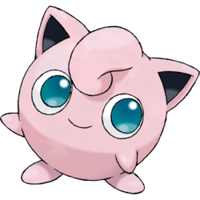

ESFP – The Entertainer

You’re a Jigglypuff!
Personality Overview: ESFPs are outgoing, energetic, and thrive on bringing fun to every situation. You’re a natural performer who loves to make others laugh and feel good. People are drawn to your enthusiasm and your ability to live fully in the moment.
Strengths
- Fun-loving and optimistic
- Charming and socially skilled
- Adventurous and always up for something new
Challenges
- May dislike long-term planning or routine
- Can get bored quickly and chase constant excitement
- Might avoid serious or uncomfortable conversations
Why Jigglypuff?
Jigglypuff is playful, attention-grabbing, and thrives on making people smile—just like you! Whether you’re keeping everyone entertained or bringing energy to a dull moment, you make life brighter for those around you.
Personality Deep Dive
Your dominant trait is Extraverted Sensing (Se), which gives you a love for excitement and experiencing the world firsthand. Your secondary trait, Introverted Feeling (Fi), keeps you authentic and true to your personal values. You live for the now and make the most of every opportunity.
Pokémon Compatibility
You thrive with adventurous and social types who can keep up with your energy, but overly serious or routine-loving personalities might bore you.
✅ Best Matches
- ENFP – Eevee: Matches your love for fun and exploration—together you’re a whirlwind of excitement.
- ENTP – Gengar: Playful and quick-witted, they’ll keep you laughing and entertained.
- ESFJ – Chansey: Enjoys your lively nature and keeps you grounded when needed.
🔸 Good Potential
- ENFJ – Pikachu: Warm and encouraging, they love your spark but may want to slow you down sometimes.
- ISFP – Rapidash: Shares your sense of adventure but is more laid-back, which can be a nice balance.
- ESTP – Arcanine: A fellow thrill-seeker, though you might compete for attention.
⚠️ Tough Matches
- ISTJ – Snorlax: Too structured and slow-paced for your spontaneous energy.
- INTJ – Lucario: Strategic and serious, they may find your unpredictability frustrating.
- ISFJ – Vaporeon: Caring but prefers quiet stability, which can feel restrictive for you.
Retake the Quiz